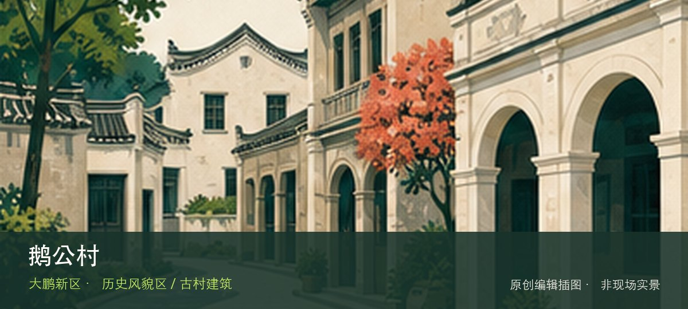

适合谁
适合建筑、地方史和社区观察者；参观时须尊重居民、宗教礼仪与生产秩序。

编辑配图·非现场实景SHENZHEN GUIDE · 306
南澳街道鹅公片区 · 历史风貌区 / 古村建筑
鹅公村位于南澳街道鹅公片区，偏远海岸村落保留传统民居、山径和小海湾关系，到访必须以当天道路与公共开放边界为先。这里不是只有一个打卡点：鹅公村传统民居提供主要线索，山海村落通道补足另一层现场关系。阅读这处地点要把鹅公村传统民居与山海村落通道放回仍在使用的街巷或社区中，不把历史空间当成布景。先看公开区域，再按居民生活、礼仪和开放边界调整停留，不进入封闭建筑。
WHY GO
适合建筑、地方史和社区观察者；参观时须尊重居民、宗教礼仪与生产秩序。
先核对鹅公村当天开放与入口，从鹅公村传统民居开始；体力或时间不足时，在前往山海村落通道之前结束，不临时追加陌生支线。
公共交通先到南澳街道鹅公片区，再以鹅公村公开参观入口为终点；多入口地点须按计划游线选择入口，并预先锁定返程站点。
车辆停在鹅公村外围正规公共停车场后步行进入；不驶入窄巷，不占居民门口、作业区或消防通道。
10 月至次年 4 月步行较舒适；夏季避开正午，雨天留意石板、台阶和老建筑周边湿滑。
NEARBY IDEAS
 授权实景图
授权实景图
大鹏所城位于大鹏街道鹏城社区，明清海防城门、将军第、街巷和仍在生活的社区共同保存深圳东部军事与移民史，博物馆只是其中一部分。与同类地点相比，最值得停下来的差异落在南门与海防城格局和赖恩爵振威将军第这两个具体节点上。阅读这处地点要把南门与海防城格局与赖恩爵振威将军第放回仍在使用的街巷或社区中，不把历史空间当成布景。先看公开区域，再按居民生活、礼仪和开放边界调整停留，不进入封闭建筑。
 编辑配图·非现场实景
编辑配图·非现场实景
大鹏半岛国家地质公园位于南澳新大，古火山地貌、海岸山体和地质博物馆构成科学教育体系，但主峰与鹿雁科考线封闭，公园不等于可登七娘山。这处地点的内容并不靠规模取胜，古火山地质遗迹和地质公园博物馆景区才是最值得核对的现场证据。现场不必追求一次走完，先在古火山地质遗迹与地质公园博物馆景区之间确定主线，再按体力、日照和天气保留折返方案。山地、滨水或林下路面会随降雨改变，当天预警和开放边界始终比旧轨迹更优先。
 编辑配图·非现场实景
编辑配图·非现场实景
深圳市天文台位于西涌山海之间，气象与天文业务场所、山海步道和观测设备构成免费预约参观，名额、步行坡度和天气共同决定能否成行。把注意力放在天文观测业务场所和约一点一公里预约游线，能避免只凭名称或网红照片判断这里。参观重点是通过天文观测业务场所与约一点一公里预约游线理解技术如何进入城市日常，而不是只收集装置照片。预约、活动场次和可参与项目会改变体验，出发前要同时核对开放日与入场条件。